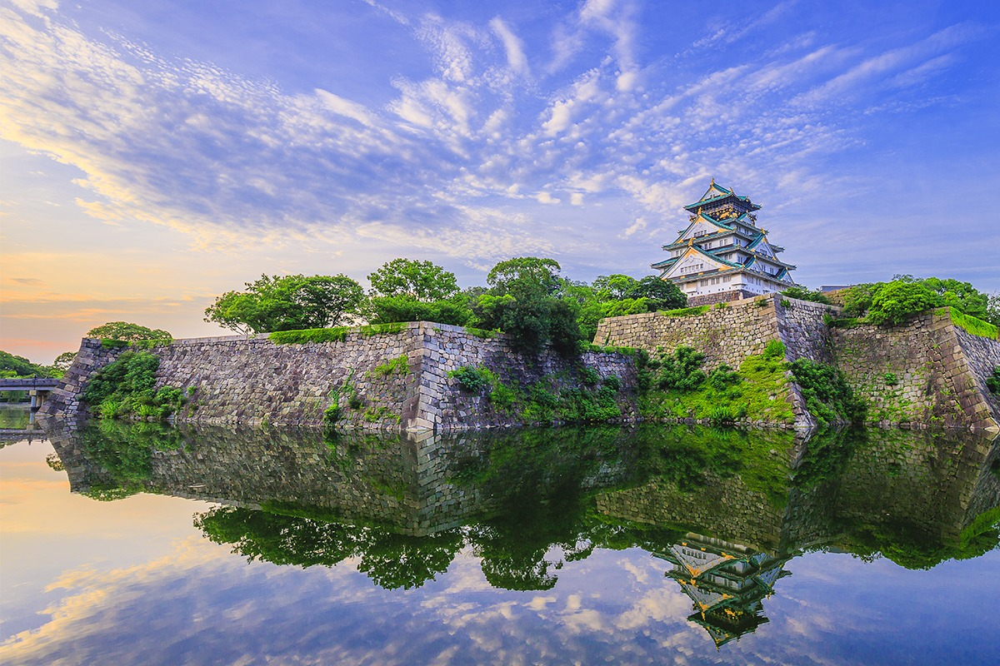
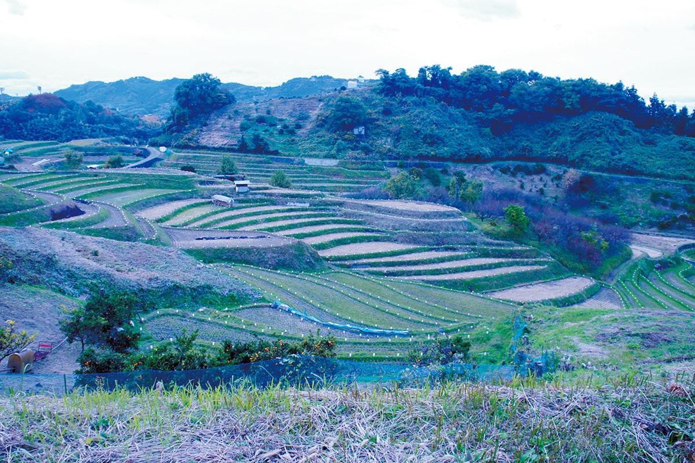
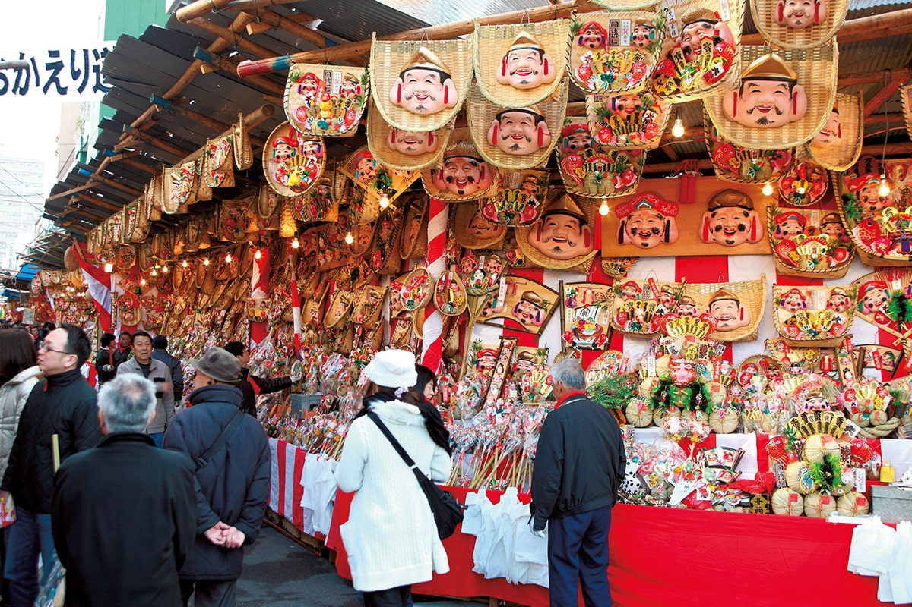
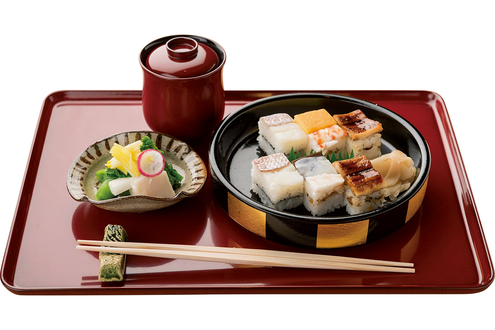
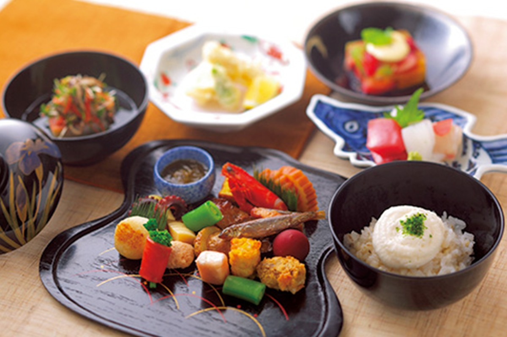
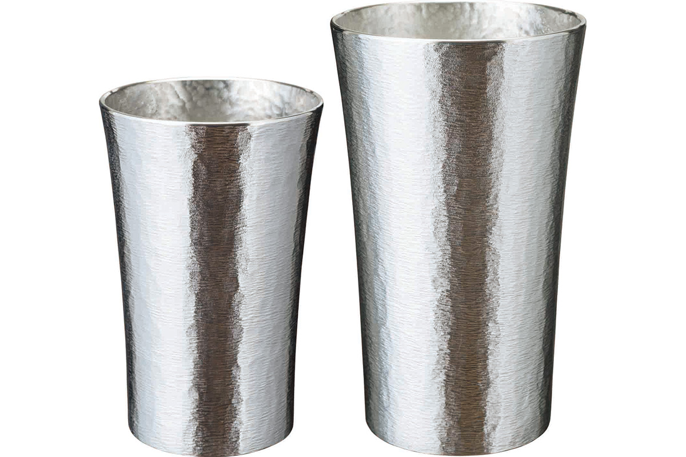
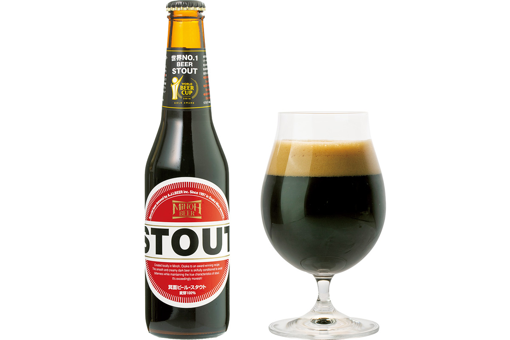
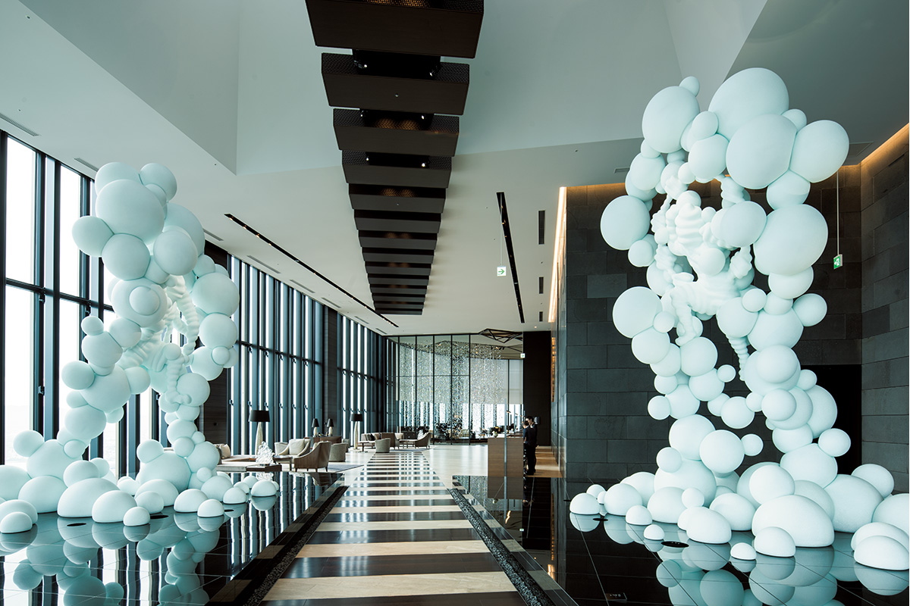

Префектура Осака
Осака: кухня страны, оловянная посуда и рисовые террасы в горах

Замок на широком каменном основании поднимается над водой, его стены отражаются в вечернем свете.
Город купцов, который в эпоху Эдо звали кухней страны, а сегодня считают одной из главных гастрономических точек Японии. Разбираем, что смотреть в Осаке и что здесь обязательно попробовать.
О префектуре
Котёл между горами и заливом
Осака лежит в котловине: на севере её закрывают горы Хокусэцу, на востоке Икома, на юге Конго и Идзуми-Кацураги, а на западе она открывается к заливу Осака.
У имени города несколько толкований. По одному из них, наносы, которые несли реки Ёдо и Ямато, соединяли острова в заливе, и повсюду оставались небольшие склоны, которые звали «осака». Есть и другое объяснение: в эпоху Эдо иероглиф «склон» сочли недобрым, потому что он читался как «вернуться в землю», и его заменили на знак «осака» из названия города.
Город рос как крепостной посад при Тоётоми Хидэёси и при сёгунате, а в эпоху Эдо его звали кухней страны: сюда свозили рис и товары со всей Японии, и здесь держали склады и менялы. В 2020 году исполнилось пятьдесят лет выставке «Экспо-70», а на 2025 год в городе назначена новая всемирная выставка. Герб префектуры соединяет знамя Хидэёси с тыквой-горлянкой и букву «O».
Что посмотреть
Террасы под старым замком
Террасы Нижней Акасака
Ступенчатые рисовые поля разворачиваются прямо под руинами замка Симоакасака, где сражался Кусуноки Масасигэ. Террасы вошли в список ста японских террас, и весной, летом и осенью они выглядят совершенно по-разному.

- Справки
- ассоциация туризма деревни Тихая-Акасака
- Телефон
- +81 721-72-1447
Что ещё посмотреть
- Башня Солнца, памятник выставки «Экспо-70»
- Национальный музей этнологии, культуры народов мира
- Ночные заводы Сэмбок, огни портовой зоны на воде
Праздники
Три дня за торговую удачу
Тока-Эбису
В святилище Имамия-Эбису молятся божеству торговли, которого в городе ласково зовут «Эбэссан». Праздник идёт три дня в начале января, и за это время к святилищу приходят куда больше миллиона человек, чтобы просить удачи в делах.

- Период
- с 9 по 11 января
- Место
- святилище Имамия-Эбису, 1-6-10 Ebisunishi, Naniwa-ku, Osaka
Другие праздники
- Тэндзин-мацури, летняя процессия по реке
- Дандзири в Кисиваде, осенние повозки и стычки кварталов
- Праздник Сумиёси, старый обряд у воды
Музеи и архитектура
Музей, выросший из выставки
Национальный музей международного искусства
Музей вырос из художественного павильона всемирной выставки 1970 года, а позже переехал в новое здание на Наканосима. Сегодня здесь собрано искусство, сделанное после Второй мировой войны, и залы меняют несколько раз в год.
- Адрес
- 4-2-55 Nakanoshima, Kita-ku, Osaka
- Телефон
- +81 6-6447-4680
- Сайт
- nmao.go.jp
Что ещё посмотреть
- Центральный общественный зал Осаки, ретро-здание на набережной
- Библиотека Наканосима, старый читальный зал
- Городок храмов Тондабаяси, улица с храмами на воде
Местная кухня
Суши, спрессованные в коробке
Суши «Кодай-судзумэ»
В деревянную форму укладывают рисовую основу и начинку из креветок и кусков рыбы, а потом прессуют так, что суши получается прямоугольным. Это блюдо зовут ещё суши в коробке или осакскими суши, и оно старше знакомых всему миру нигири.

Что ещё попробовать
- Жареный гаттё, мелкая рыба, которую едят вместе с костями
- Удон-суки, удон, который варят прямо за столом
- Окономияки, лепёшка с начинкой по выбору гостя
Где поесть
Ресторан с первого года эпохи Тэмпо
Ресторан «Кагайро», головной дом в Китахама
Ресторан открылся в первый год эпохи Тэмпо, то есть в 1830 году, и с тех пор держит строгий порядок подачи. К сезонным блюдам здесь выходят с искренним приветствием, а сам дом на набережной служит образцом для других кухонь города.

- Адрес
- 1-1-14 Kitahama, Chuo-ku, Osaka
- Телефон
- +81 6-6231-7214
- Часы
- с 11:00 до 15:00 и с 17:00 до 22:00
- Выходные
- воскресенье, праздники, середина августа, конец и начало года
- Сайт
- kagairo.co.jp
Ремёсла
Олово из Нанивы
Оловянная посуда Нанивы
В эпоху Эдо производство оловянной посуды перебралось из Киото в Осаку и превратилось в ремесло целого города. Здесь делали утварь для храмов, посуду для сакэ и чайники, и эти формы сохранились до сегодняшнего дня.

- Телефон
- +81 6-6628-6731
Что привезти
Густой стаут из Миноо
Стаут от Minoh Beer
Это сухой стаут с резким характером: аромат напоминает шоколад, а вкус остаётся мягким, поэтому напиток пьётся легче, чем ждёшь от такого цвета. Бутылка объёмом 330 миллилитров стоит 418 иен.

- Телефон
- +81 72-725-7234
- Сайт
- minoh-beer.jp
Где остановиться
Сто шестьдесят четыре комнаты над городом
Конрад Осака
Отель занимает верхние этажи западной башни комплекса «Фестиваль-тауэр» на Наканосима. Из номеров, отделанных в стиле ва-модерн, видно всю усадьбу каналов и ночные огни города.

- Адрес
- 3-2-4 Nakanoshima, Kita-ku, Osaka
- Телефон
- +81 6-6222-0111
- Комнат
- 164
- Цена
- от 38 000 иен за ночь с завтраком, налоги и сборы не включены
- Сайт
- conradosaka.jp
Местный диалект
Как здесь говорят «очень вкусно»
- мэття ойсииочень вкусно
- ойдэясудобро пожаловать
- ёбарэрубыть угощённым
- вая-я нану и беспорядок
Рекорды
В чём Осака первая
- №1 число кофеен: первое место в стране
- №1 длина торговой улицы Тэндзинбаси-судзи: первое место
- №1 высота здания: комплекс Абэно Харукас
Вопросы и ответы
Что ещё спрашивают об Осаке
Какое здание эпохи Тайсё зовут образцом городской ретро-архитектуры?
Центральный общественный зал Осаки. Он стоит в одном ряду с главной башней замка как символ города: стальной каркас и кирпич, три этажа над землёй и один под землёй, а в основе лежит неоренессанс с классическими деталями.
Какую рыбу в Осаке зовут «гаттё» и едят жареной?
В регионе Канто её называют мэготи, длина у неё около двадцати сантиметров. В жареном виде она съедается вместе с костями, поэтому её ценят за кальций, и это известное блюдо южного района Сэмбок.
Справочник
Осака в цифрах
Общие сведения
| Административный центр | Осака |
| Муниципалитеты | 33 города, 9 посёлков, 1 село |
| Площадь | 1905 кв. км |
| Население | 8,81 млн человек |
| Плотность населения | 4625,5 человека на кв. км |
| Иностранных гостей в год | 12,31 млн |
| Дерево префектуры | гинкго |
| Цветок префектуры | слива и первоцвет |
| Птица префектуры | сорокопут |
Климат
| Средняя температура | +17,4 |
| Максимум | +34,6 |
| Минимум | +1,8 |
| Осадки | 1652 мм |
| Ясных дней | 29 |
| Дождливых дней | 96 |
| Снежных дней | 12 |
Для путешественника
| Онсэнов | 33 |
| Гостиниц и рёканов | 480 |
| Музеев искусств | 9 |
| Музеев | 28 |
| Митиноэки, придорожных станций | 10 |
| Национальное сокровище | главный зал святилища Сумиёси и другие |
| Важных культурных ценностей | 678, из них 62 национальных сокровища |
| Исторических мест | 68 |
| Живописных мест | 7 |
| Природных памятников | 17 |
| Всемирное наследие | курганы Модзу и Фуруити |
| Национальные парки | Конго-Икома-Кисэн, лес Миноо, всего 2 |
Природные памятники
- Обезьяны парка Миноо, стадо, которое живёт у водопада
- Камфорное дерево Кунгай, исполин у дороги
- Саговник храма Мёкокудзи, старое растение во дворе
- Дзельква в Номе, крупное дерево у деревенской дороги